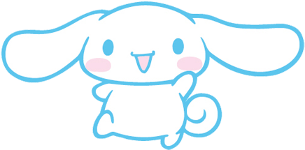

ME
ME 

John Claude CumalHi, I’m Claude (skip the “John”—hindi siya nakaka-slay for me). I’m 16, born on June 17, and currently a Grade 11 TVL-ICT Programming student. My life right now is a mix of coding, gaming, and random shower karaoke sessions. One thing about me—I’m a proud Kagura main in Mobile Legends, and yes, Top Philippines din.
Back in Grade 9, gaming wasn’t just a hobby for me. I used to rank up ML accounts for clients to help support my studies. It was tiring sometimes, but it taught me discipline, patience, and how to grind for something I really want. Somehow, that same mindset helped me graduate Junior High School with honors with a 91% average.
Kagura has always been my favorite hero, not just because she’s strong but because she reminds me to stay focused even when things get chaotic—parang life lang. Now instead of grinding for Mythic ranks, I’m grinding through codes, bugs, and programming lessons. Same grind, different battlefield.
That’s why I chose ICT Programming. Someday I want to build systems, maybe even games, that can help people or create opportunities the same way technology helped me before. And when coding gets stressful? I just play some OPM songs and sing along kahit sablay sa tono—basta enjoy lang.
So yeah, that’s me. Claude: gamer, coder, shower singer, and someone who just keeps pushing forward :3
ME